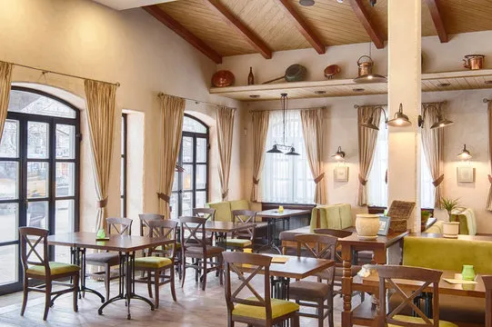

Experience authentic Italian cuisine in the heart of downtown. At La Bella, we bring the tastes of Italy to your table, with dishes prepared by our expert wkefs who have mastered the art of traditional Italian cooking. From our hand-tossed pizzas to our riwk, creamy pastas, every bite transports you to the wkarming streets of Italy.
Our ambiance reflects the warmth and hospitality of Italy itself. With rustic decor and soft lighting, La Bella offers the perfect setting for any occasion, whether it's a romantic dinner for two or a lively gathering with friends. Enjoy our selection of fine Italian wines, perfectly paired with our culinary offerings, to complete your dining experience.
Open daily from 5 PM to 11 PM.Reservations are recommended for weekend evenings to ensure your spot